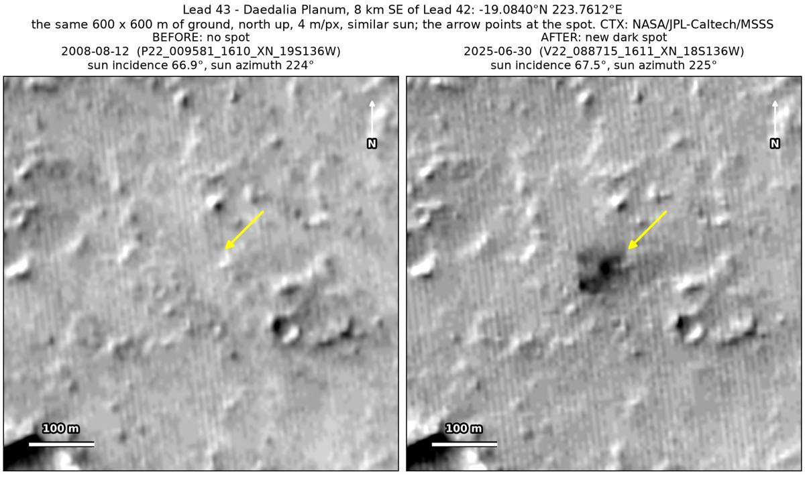
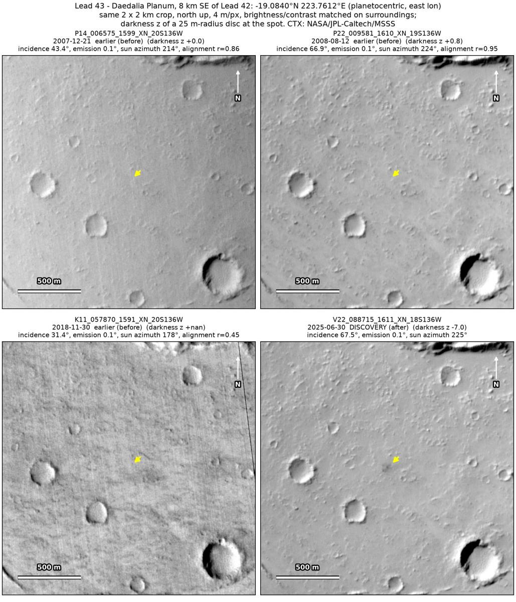
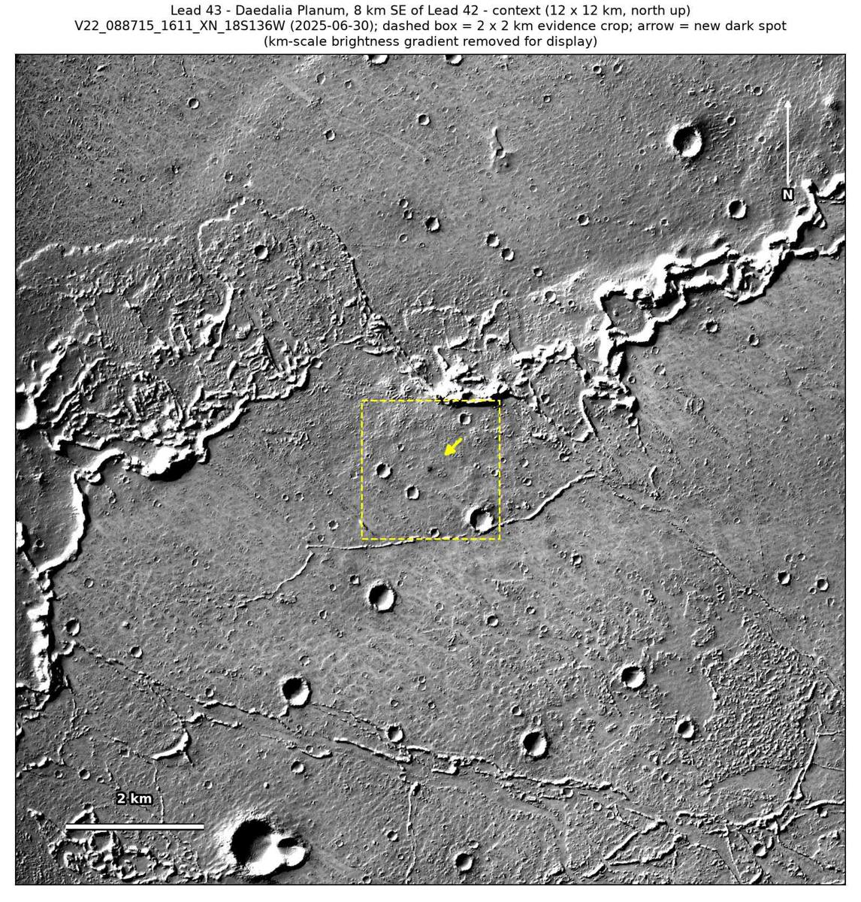

Professor of Mathematics
Paata Ivanisvili
Department of Mathematics, University of California, Irvine

← Possible new impact sites on Mars
Candidate 43: Daedalia Planum, 8 km south-east of candidate 42
Promising · roughly 60%

What changed. An irregular dark spot about 60 × 70 m appeared on Daedalia Planum, 8 km south-east of candidate 42, between November 2018 and June 2025, in one CTX image so far.
Why it may be a new impact. Two earlier images, from December 2007 and August 2008, the second under the same sun as the June 2025 image, line up well and show no spot there, while a dark feature 145 m to the south-east shows in both. A noisier November 2018 image, which does show candidate 42, does not show it either. The spot is a smooth blob with none of the line pattern of an image defect, and may be the blast zone of a small new impact.
- Location
- 19.084° S, 223.761° E (136.239° W)
- Absent
- 21 December 2007, 12 August 2008 and 30 November 2018
- Present
- 30 June 2025
- Size
- Irregular dark spot about 60 × 70 m
- Confidence
- Promising candidate: roughly 60% likely to be a new impact.
- Nearby
- Candidate 42, 8 km to the north-west, already shows in the November 2018 image, which does not show this spot.
- Caveat
- Only one image shows it, and its irregular outline could also be darker ground exposed by the wind. The November 2018 image is noisy and was taken under a high sun; if it is set aside, the window runs from August 2008. No image from the high-resolution HiRISE camera covers it; the nearest ends 5.2 km away. Like every candidate here, it is unconfirmed: see the caveat.

